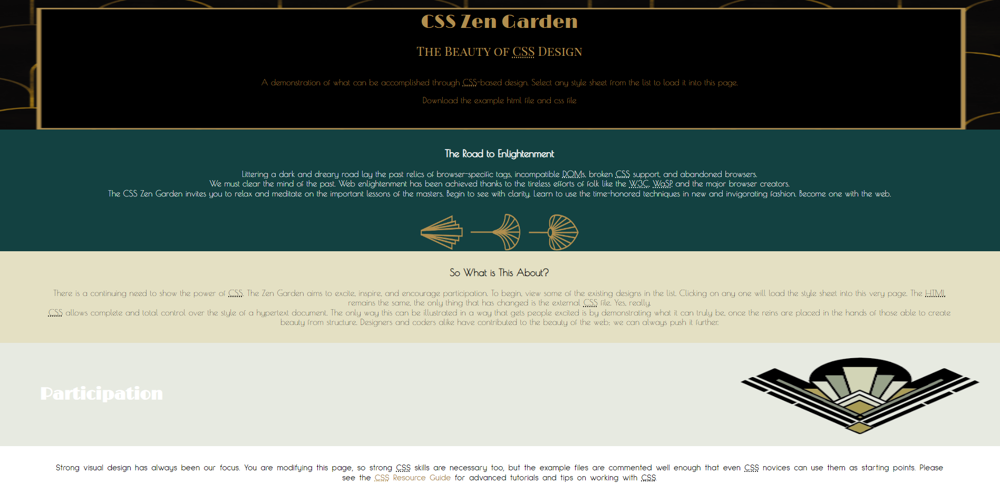
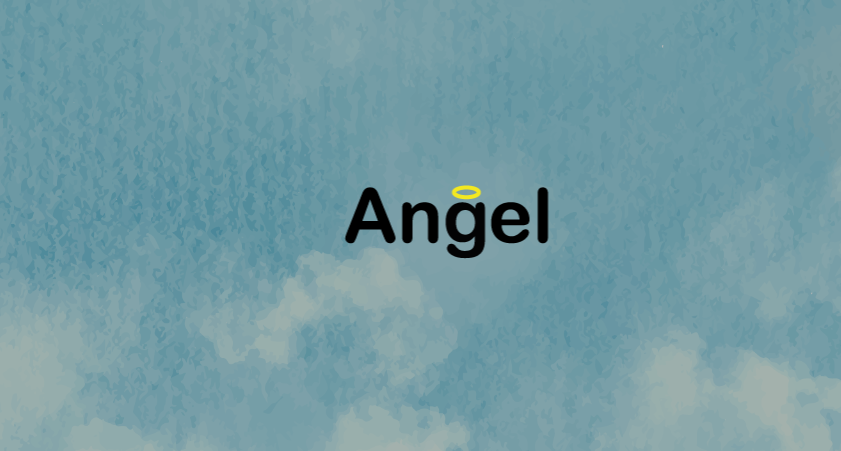

Dynamix Typografie
Ik ben verheugd om mijn project te presenteren, getiteld "Dynamische Typografie," een boeiende verkenning van letterlogo's in de wereld van sport. In dit project ben ik diep ingegaan op de fusie van typografie en sportiviteit om een meeslepende visuele ervaring te creëren. Ga met me mee op de volgende pagina terwijl ik de hele reis onthul, van concept tot creatie, waarbij ik de evolutie van dit dynamische letterlogo laat zien.
Het procesStap achter de schermen van "Dynamic Typographie" en ontdek het boeiende proces achter de creatie van dit letterlogo voor de wereld van sport. Verken de stappen, uitdagingen en inspiraties die hebben bijgedragen aan het vormgeven van dit dynamische ontwerp. Laat je meevoeren door de creatieve reis terwijl ik de verschillende fasen onthul die hebben geleid tot het uiteindelijke resultaat. Bereid je voor om geïnspireerd te worden door het proces achter de creatie!
Dynamic Poster
Ik ben verheugd om mijn project, genaamd "Dynamic Poster," met je te delen. Deze unieke creatie is een getekende poster die tot leven komt in vectorformaat, geïnspireerd door de intrigerende film "Tenet." Neem een kijkje op de volgende pagina om het volledige project te zien en te ontdekken hoe ik deze poster tot leven heb gebracht, van de schetsfase tot het definitieve ontwerp.

Het procesMijn creatieve reis voor "Dynamic Poster" begon met het bekijken van de film "Tenet" voor inspiratie. Ik maakte schetsen geïnspireerd door de film en deed onderzoek naar de visuele stijl en thema's. Deze drie stappen vormden de kern van mijn creatieve proces, waarbij ik mijn passie voor film en kunst kon combineren in een unieke poster.
CSS Zengarden
Stap binnen in de weelderige wereld van Art Deco, waar elegantie en glamour samenkomen in een tijdloze esthetiek. Mijn nieuwste project neemt je mee op een reis door deze fascinerende periode, waar ik de pracht en praal van Art Deco heb omgezet in een moderne en dynamische interpretatie. Laat je betoveren door de geometrische patronen, weelderige kleuren en verfijnde details van deze iconische stijl, en ontdek hoe ik deze heb toegepast in een uniek en boeiend ontwerp. Welkom in de wereld van Art Deco
Het procesMijn creatieve reis begon met een diepe duik in de tijdloze esthetiek van Art Deco. Geïnspireerd door de weelderige patronen en elegantie van deze periode, heb ik mijn ontwerp tot leven gebracht door een harmonieus samenspel van kleuren, vormen en typografie. Met elk penseelstreekje en elke lijn heb ik de essentie van Art Deco gevangen en vertaald naar een moderne interpretatie die zowel eerbetoon brengt aan het verleden als een stap vooruit is in de toekomst van design. Dit project was een reis van ontdekking, creativiteit en passie, en ik ben verheugd om het resultaat met je te delen.
The Useless Web

Welkom bij mijn project: Useless Website. Dit project draait om het creëren van de meest onnutige website die je je kunt voorstellen. Het idee achter de Useless Website is simpel: het biedt geen praktische informatie, geen nuttige functies, en geen zinvolle interacties. In plaats daarvan nodigt het je uit om te genieten van de absurditeit en het plezier van iets totaal zinloos. Laat je verrassen door de willekeurige inhoud en onlogische elementen die deze website te bieden heeft. Het is een speelse reminder dat niet alles een doel hoeft te hebben om leuk te zijn!
Het procesHet creëren van de Useless Website was een reis vol creativiteit en humor. Het proces begon met het brainstormen van ideeën voor de meest absurde en onnutige functies die een website kan hebben. Vervolgens begon ik met de ontwikkeling, waarbij ik gebruik maakte van HTML, CSS, en JavaScript om de willekeurige en vaak zinloze elementen tot leven te brengen. Gedurende dit proces lag de focus niet op gebruiksvriendelijkheid of efficiëntie, maar juist op het creëren van een speelse en chaotische ervaring. Het was een uitdagende, maar enorm leuke onderneming die de grenzen van conventionele webontwikkeling op een humoristische manier verkent.